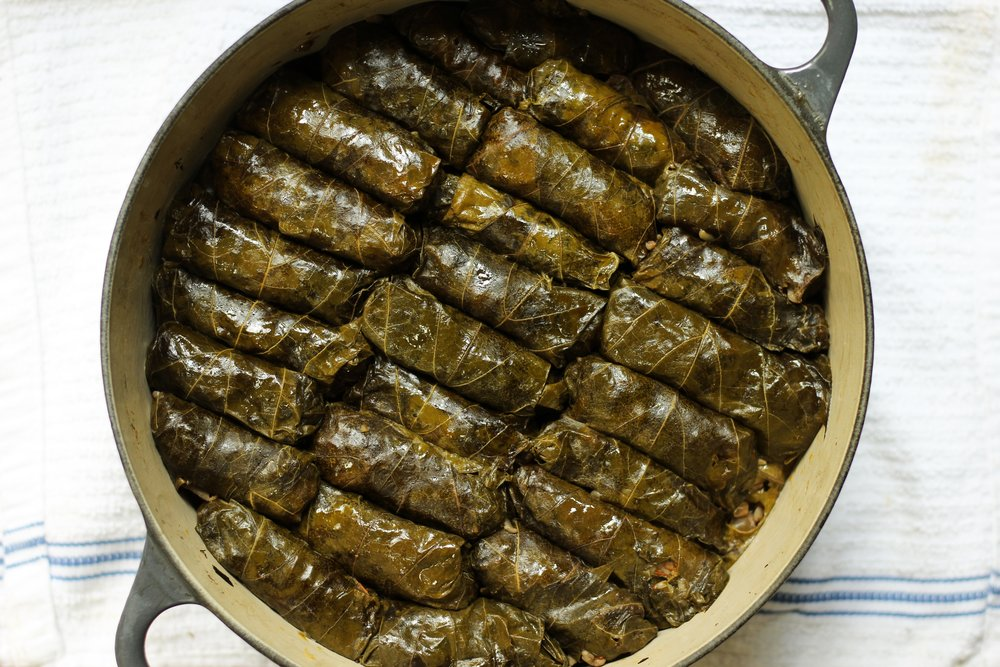

Home
Dolma

Dolma is a family of stuffed dishes popular in Mediterranean, Middle Eastern, and Central Asian cuisine, typically involving rice, meat, or other fillings wrapped in leaves or stuffed into hollowed-out vegetables. Grape leaves are a common type, known as "sarma" when rolled, but other vegetables like zucchini, bell peppers, and even onions can be used.
You’ll find many variations of stuffed grape leaves recipes, from Turkey and Greece to Lebanon, and Egypt where it’s called Warak Enab (Grape Vine Paper.) Some recipes containing meat, others vegetarian. Some containing tomato sauce, others cooked in a lemony broth.
Less commonly, both fruits and meat (particularly offal) may also be stuffed with similar fillings and termed dolma. Dolma can be served warm or at room temperature and are common in modern cuisines of regions and nations that once were part of the Ottoman Empire.
Ingredients:
- 1 16-oz jar grape leaves in brine
- 1 1/2 cup short grain rice, soaked in plenty of water for 15 minutes, then drained
- Extra virgin olive oil
- 1 large yellow onion, finely chopped
- 12 oz lean ground beef
- Kosher salt
- Black pepper
- 1 tsp allspice
- 1/2 tsp cumin
- 1/2 cup EACH chopped fresh parsley, fresh dill, and fresh mint
- 1 to 2 tomatoes sliced into rounds
- About 4 cups or more low-sodium chicken broth or water
- Juice of 2 lemons
Steps:
- Heat oil in a medium saucepan over medium heat. Add onions and sauté until tender, about 5 minutes. Stir in rice, then add enough hot water to cover. Cover and simmer until rice is halfway cooked, about 10 minutes.
- Remove from the heat and stir in tomato paste, currants, pine nuts, cinnamon, mint, dill, allspice, and cumin. Let mixture cool, about 15 minutes.
- Prepare a large pot by placing an inverted plate on the bottom; this will protect the dolmas from direct heat during steaming.
- Cut off and discard any grape leaf stems. Place about 1 teaspoon cooled rice mixture into the center of a leaf. Fold in the sides, then roll into a cigar shape. Place into the prepared pot. Repeat to make remaining dolmas.
- Pour in just enough warm water to reach the bottom of the first layer of dolmas. Cover and simmer over low heat for 30 to 45 minutes, or until rice is totally cooked. Check the water level often and add more as necessary.
Home